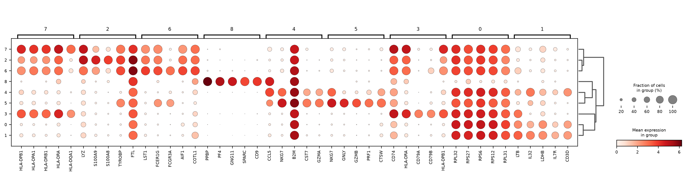

Everything downstream is just a matrix - so the preprocessing (alignment + counting) determines what you can ever ask. Two philosophies:
align then count (STAR + Cell Ranger [Zheng17])
pseudoalign then count (kallisto + bustools [Bray16, Melsted19]) - the latter is 10–100x faster with nearly identical counts, which is why modern pipelines (alevin-fry, STARsolo, kallisto|bustools) all moved there.
The wet-lab + sequencing pipeline
Steps
tissue dissociation → single-cell suspension
encapsulation with barcoded beads (droplets) or plate sorting
cell lysis, mRNA capture on beads, reverse transcription
10x Genomics PBMC 3k (peripheral blood mononuclear cells, healthy donor) — the “hello world” of scRNA-seq; publicly downloadable.
import scanpy as scsc.settings.verbosity =1# download once from 10x, then load the filtered matrix:# https://cf.10xgenomics.com/samples/cell-exp/1.2.0/pbmc_3k/pbmc_3k_filtered_gene_bc_matrices.tar.gzadata = sc.read_10x_mtx("../_data/filtered_gene_bc_matrices/hg19/", var_names="gene_symbols", cache=True, compressed=False,)adata.var_names_make_unique()print(adata)
Also inspect adata.var (per-gene info: gene name, chromosome) and adata.obs (per-cell metadata — currently empty; we will fill it with QC metrics, clusters, annotations).
Quality control
Background
scRNA-seq data is noisy by construction:
each cell is captured with only thousands of reads, so most genes are zero
bad cells (empty droplets, dying cells, doublets) systematically distort normalization and clustering
they are recognizable precisely because of the known failure modes of the chemistry (mitochondrial leakage, doublets, ambient RNA) [Luecken19, Wolock19, Young20].
Why QC first?
Garbage in, clusters out
QC removes these before normalization:
empty droplets (no cell)
dying cells (mitochondrial RNA leaks)
doublets (two cells)
The standard QC metrics
Per-cell metrics
total counts (n_counts): library size of the cell
number of genes detected (n_genes): how many genes have ≥ 1 UMI
mitochondrial fraction (pct_counts_mt): % of UMIs from mitochondrial genes — high = dying cell (cytoplasmic RNA lost, mito RNA remains)
ribosomal fraction (pct_counts_ribo), hemoglobin fraction (pct_counts_hb) — blood samples: high Hb = red blood cell contamination
Healthy cells form a dense cloud; outliers (very low genes, very high mito) are suspect. Thresholds are dataset-specific — e.g. PBMC 3k: keep cells with 200–2500 genes and < 5–10% mito.
Filtering cells and genes
Typical filters
sc.pp.filter_cells(adata, min_genes=200)sc.pp.filter_cells(adata, max_genes=6000)adata = adata[adata.obs.pct_counts_mt <10, :].copy()sc.pp.filter_genes(adata, min_cells=3) # genes seen in >= 3 cellsprint(adata.shape)
genes in very few cells: noise, rarely informative
Doublets
Two cells, one barcode [Wolock19]
At high cell loading, ~5–10% of droplets contain two cells. A doublet looks like a cell with many genes and many counts — and it clusters on its own or bridges two clusters.
Scrublet [Wolock19]: simulates doublets by summing observed profiles, then scores each cell by similarity to simulated doublets; flag cells above a threshold (expected doublet rate from 10x: ~0.8% per 1000 cells loaded).
Lysed cells spill RNA into the medium; every droplet picks up some of it. This inflates counts of ubiquitously expressed genes (e.g. MALAT1) in all cells.
SoupX [Young20]: estimates the ambient profile from empty droplets, then subtracts a fraction of it from every cell.
import soupx# (run on raw counts before filtering)
Cheap insurance; matters most for low-count genes.
QC: what not to do
Pitfalls
don’t filter on the clustering results and then cluster again on the filtered data without re-checking
don’t use fixed thresholds across datasets (a 10% mito cutoff may be right for PBMC, wrong for tissue)
don’t remove “outlier” cells just because they look weird — they might be a rare real cell type
record every threshold in the report; re-run sensitivity analysis if conclusions depend on them
Normalization
Background
Normalization in scRNA-seq is harder than in bulk:
counts per cell vary over orders of magnitude for technical reasons (capture efficiency, sequencing depth)
⚠️ Over-regression can remove real biology (e.g. a disease that changes mito content). Regress only what you have reason to call technical.
Scaling and clipping
Before PCA
sc.pp.scale(adata, max_value=10) # zero mean, unit variance per gene; clip at 10
PCA needs comparable variance per gene → scale
clipping prevents a few ultra-high genes from dominating
⚠️ do this after HVG selection (next section), or scale only the HVGs
Feature selection and PCA
Background
Here we will apply ordination (PCA) at single-cell scale, with one addition: feature selection first.
Most genes are noise (lowly expressed, or constant across cells). PCA/clustering on all genes is dominated by the noisiest, most highly expressed ones.
Solution: select highly variable genes (HVGs) - genes whose variance exceeds what mean expression predicts - and use only those (~1 000-3 000) downstream.
Plot explained variance ratio per PC: a sharp elbow separates signal PCs from noise PCs. Take PCs before the elbow (or use JackStraw / sc.tl.rank_genes_groups-style heuristics).
Batch effects are the single biggest confounder in scRNA-seq:
in large atlases, the experiment date often explains more variance than the biology [Tung17]
integration methods (MNN [Haghverdi18], Harmony [Korsunsky19], scVI) all implement the same idea: find corresponding cells across batches and correct only the batch direction, preserving biological differences
getting this wrong either leaves batches visible or erases real biology.
What is a batch effect?
Technical variation between samples
Cells processed on different chips, days, or by different people differ systematically - not because of biology. In the PCA plot, batches often separate MORE than cell types.
if you ignore it: clusters = batches, not biology
if you “correct” it wrongly: you erase real biological differences (e.g. disease vs control!)
Integration: align shared cell types
The goal
Find a shared embedding where the same cell type from different batches overlaps, while different cell types stay apart.
MNN (mutual nearest neighbors) [Haghverdi18]: for each cell in batch B, find its MNNs in batch A; compute a correction vector; apply along the batch direction
BBKNN: fast graph-based approximation of MNN
Harmony [Korsunsky19]: iterative PCA-space clustering correction - fast, very popular
scVI: deep generative model; also models counts properly
Harmony in code
With scanpy
import harmonypy# after PCA on the concatenated object:harmony_out = harmonypy.run_harmony(adata.obsm["X_pca"], adata.obs, "batch")adata.obsm["X_pca_harmony"] = harmony_out.Z_corr.Tsc.pp.neighbors(adata, use_rep="X_pca_harmony", n_pcs=30)
Or BBKNN: import bbknn; bbknn.bbknn(adata, batch_key="batch") before sc.tl.umap.
When NOT to integrate
Danger
If batches ARE the biology (e.g. tumor vs normal samples), integration will erase the tumor signal. Then:
analyze samples separately and compare clusters/markers, or
use methods that preserve known biological covariates, or
include the biological variable as a covariate in the model (scVI, MAST, pseudobulk DE)
Clustering
Background
graph-based methods win here because scRNA-seq data lies on a manifold (continuum of cell states), not in Gaussian blobs
community detection on the KNN graph (Louvain [Blondel08], Leiden [Traag19]) follows the data’s shape instead of forcing spherical clusters.
Why cluster cells?
From 10k points to groups
Cells of the same type have similar expression → close in PC space. Clustering groups them so we can:
count cell types and their proportions
find markers per cluster (next sections)
compare conditions (composition changes!)
The KNN graph
Step 1: build a neighborhood graph
sc.pp.neighbors(adata, n_neighbors=15, n_pcs=30) # KNN graph in PC space
nodes = cells, edges = K-nearest neighbors (weighted by distance)
this graph is the substrate for both clustering and UMAP
Louvain and Leiden
Community detection on the graph
Louvain [Blondel08]: greedily optimize modularity - partition the graph so communities have more internal than expected edges
Leiden [Traag19]: fixes Louvain’s problem of disconnected/well-connected communities; scanpy uses Leiden by default
Abstracts the KNN graph to a graph of clusters - shows which clusters are connected (e.g. transitional states). Great for trajectories.
Reading a UMAP
Dos and don’ts
✅ color by cluster, by QC metrics, by known marker expression
✅ check that batches are mixed (after integration)
❌ don’t interpret distances or densities quantitatively
❌ don’t over-cluster to make a prettier plot
Marker genes and differential expression
Background
DE in scRNA-seq is a statistics minefield: testing per cell pretends 10 000 cells are 10 000 independent samples (they are not - one patient is one replicate).
The field converged on two safe patterns: marker genes for “what is this cluster” (Wilcoxon/MAST [Finak15]) and pseudobulk for “what changed between conditions” (sum per sample per cluster, then edgeR/DESeq2 [Robinson10, Anders10, Tung17]).
Marker genes
What makes a cluster a cluster
Marker genes = genes specifically high in one cluster vs all others. They are how you name clusters (e.g. cluster with CD3E → T cell).
WARNING: dendrogram data not found (using key=dendrogram_leiden). Running `sc.tl.dendrogram` with default parameters. For fine tuning it is recommended to run `sc.tl.dendrogram` independently.

Statistical methods for scRNA-seq DE
Why not a plain t-test [Finak15]
scRNA-seq counts are sparse and zero-inflated. Methods:
Wilcoxon rank-sum (scanpy default): fast, robust, tests distribution shift
MAST [Finak15]: hurdle model — models detection (zero vs nonzero) and expression level separately; handles covariates
DESeq2/edgeR [Anders10, Robinson10]: designed for bulk; usable on pseudobulk counts
Pseudobulk
The statistically safest approach [Tung17]
Sum counts per (sample, cell type) → one pseudo-bulk profile per sample per cluster → run DESeq2/edgeR on those.
treats the sample as the unit of replication, not the cell
avoids the “10 000 cells = p < 1e-100” fallacy (cells are not independent replicates)
standard for differential abundance/expression across conditions
Visualizing markers
Standard plots
sc.tl.rank_genes_groups(adata, "leiden", method="wilcoxon")# collect the top 5 marker genes of each cluster into one list:import numpy as nprg = adata.uns["rank_genes_groups"]["names"] # structured array, one field per clustertop_markers =list(dict.fromkeys( np.concatenate([rg[g][:5] for g in rg.dtype.names]).tolist()))print(top_markers)import matplotlib.pyplot as pltsc.pl.dotplot(adata, var_names=["CD3E", "CD14", "MS4A1", "GNLY"], groupby="leiden")sc.pl.heatmap(adata, var_names=top_markers, groupby="leiden", show_gene_labels=True)sc.pl.matrixplot(adata, var_names=top_markers, groupby="leiden", dendrogram=True)plt.show()
check canonical markers on the UMAP (sc.pl.umap(adata, color=["CD3E", ...]))
cross-check with SingleR/CellTypist labels
name clusters; keep the marker table in the report
save: adata.write_h5ad("pbmc3k_annotated.h5ad")
Trajectories and RNA velocity
Background
Development and differentiation are continuous, but clustering forces discrete groups. Trajectory methods (Slingshot [Street18], PAGA [Wolf19]) order cells along paths (pseudotime); RNA velocity [LaManno18] goes further and estimates each cell’s future state from the ratio of unspliced to spliced mRNA. Both are exploratory — they generate hypotheses, they don’t prove mechanisms.
Cells are not static
Development and differentiation
Many datasets contain a continuum: stem cell → progenitor → differentiated cell. Clustering discretizes it; trajectory inference orders cells along a path (pseudotime).
Pseudotime methods
Slingshot, PAGA, Monocle…
Slingshot [Street18]: build a minimum spanning tree of clusters, find lineages through it, order cells by projection
PAGA (shown earlier): cluster-level trajectories
output: a pseudotime value per cell + a trajectory plot
RNA velocity
The direction of change [LaManno18]
Spliced vs unspliced mRNA counts per gene: a gene being activated has more unspliced than expected; repressed has more spliced. The ratio gives a per-cell, per-gene velocity vector — the future state of the cell.
scvelo package: estimates velocity, projects it onto the UMAP as arrows
powerful, but noisy; treat as hypothesis generator
Caveats
Trajectory pitfalls
pseudotime is a ordering, not a clock (unless calibrated)
branching points can be artifacts of batch effects
velocity assumes constant transcription rates — often violated
Exercises
Final exercises
Run the full PBMC 3k pipeline; report cluster count, top markers per cluster, and your annotation.
Add simulated doublets (sum two random cells’ counts) — does Scrublet find them? At what rate?
Split PBMC 3k into two “batches” (first/second half of cells), run Harmony, and verify batch mixing on the UMAP.
References
Primary sources
References (1/2)
[Mortazavi08] Mortazavi, A., Williams, B. A., McCue, K., Schaeffer, L., & Wold, B. (2008). Mapping and quantifying mammalian transcriptomes by RNA-Seq. Nature Methods, 5(7), 621–628.
[Tang09] Tang, F. et al. (2009). mRNA-Seq whole-transcriptome analysis of a single cell. Nature Methods, 6(5), 377–382.
[Regev17] Regev, A. et al. (2017). Science forum: the Human Cell Atlas. Science, 358(6359), 58–59.
[Macosko15] Macosko, E. Z. et al. (2015). Highly parallel genome-wide expression profiling of individual cells using nanoliter droplets (Drop-seq). Cell, 161(5), 1202–1214.
[Zheng17] Zheng, G. X. Y. et al. (2017). Massively parallel digital transcriptional profiling of single cells (10x Chromium). Nature Communications, 8, 14049.
[Picelli13] Picelli, S. et al. (2013). Smart-seq: full-length transcriptome sequencing in single cells. Nature Methods, 10(11), 1096–1098.
[Picelli14] Picelli, S. et al. (2014). Smart-seq2 for sensitive full-length transcriptome profiling in single-cell RNA-seq. Nature Methods, 11(9), 959–962.
[Bray16] Bray, N. L. et al. (2016). Near-optimal probabilistic RNA-seq quantification (kallisto). Nature Biotechnology, 34, 525–527.
[Melsted19] Melsted, P. et al. (2019). Modular and efficient pre-processing of single-cell RNA-seq (bustools). Nature Biotechnology, 37, 1193–1195.
[Wolf18] Wolf, F. A., Angerer, P., & Theis, F. J. (2018). SCANPY: large-scale single-cell gene expression data analysis. Genome Biology, 19, 15.
[Wolf19] Wolf, F. A., Hamey, F., Plass, M., Solana, J., Dahlin, J. S., Götting, B., … & Theis, F. J. (2019). PAGA: graph abstraction reconciles clustering with trajectory inference in single-cell genomics. Genome Biology, 20, 59.
[Stuart19] Stuart, T. et al. (2019). Comprehensive integration of single-cell data (Seurat). Cell, 177(7), 1888–1902.e21.
[Luecken19] Luecken, M. D., & Theis, F. J. (2019). Current best practices in single-cell RNA-seq analysis: a tutorial. Molecular Systems Biology, 15, e8746. — basis of https://sc-best-practices.org
[Wolock19] Wolock, S. L., Kalen, M., & Klein, A. M. (2019). Scrublet: computational identification of cell doublets. Cell Systems, 8(4), 281–291.e9.
[Young20] Young, M. D., & Behjati, S. (2020). SoupX: eagerly removing ambient RNA contamination. GigaScience, 9(12), giaa131.
[Lun16] Lun, A. T. L., McCarthy, D. J., & Marioni, J. C. (2016). A step-by-step workflow for low-level analysis of single-cell RNA-seq data with Bioconductor. F1000Research, 5, 2122.
Primary sources (2/2)
References (2/2)
[Hafemeister19] Hafemeister, C., & Satija, R. (2019). Normalization and variance stabilization of single-cell RNA-seq data using regularized negative binomial regression (sctransform). Genome Biology, 20, 257.
[Haghverdi18] Haghverdi, L. et al. (2018). Batch effects in single-cell RNA-sequencing data are corrected by matching mutual nearest neighbors (MNN/BBKNN). Nature Biotechnology, 36, 421–427.
[Korsunsky19] Korsunsky, I. et al. (2019). Fast, sensitive and accurate integration of single-cell data with Harmony. Nature Methods, 16, 1289–1296.
[Tung17] Tung, P. Y. et al. (2017). Batch effects in single-cell RNA-sequencing data are corrected by matching mutual nearest neighbors. Nature Methods, 14, 381–387.
[Blondel08] Blondel, V. D. et al. (2008). Fast unfolding of communities in large networks (Louvain). Journal of Statistical Mechanics, P10008.
[Traag19] Traag, V. A., Waltman, L., & van Eck, N. J. (2019). From Louvain to Leiden: guaranteeing well-connected communities. Scientific Reports, 9, 5233.
[McInnes18] McInnes, L., Healy, J., & Melville, J. (2018). UMAP: uniform manifold approximation and projection for dimension reduction. arXiv:1802.03426.
[vanDerMaaten08] van der Maaten, L., & Hinton, G. (2008). Visualizing data using t-SNE. JMLR, 9, 2579–2605.
[Finak15] Finak, G. et al. (2015). MAST: a flexible statistical framework for assessing transcriptional changes (single-cell RNA-seq). Genome Biology, 16, 278.
[Aran19] Aran, D., Looney, A. P., & Liu, L. (2019). Single-cell landscape of human tissues (SingleR). Nature Biotechnology, 37, 73–78.
[Street18] Street, K. et al. (2018). Slingshot: cell lineage and pseudotime inference. Nature Communications, 9, 1690.
[LaManno18] La Manno, G. et al. (2018). RNA velocity of single cells. Nature, 560, 498–502.
[Robinson10] Robinson, M. D., McCarthy, D. J., & Smyth, G. K. (2010). edgeR: bioconductor package for differential expression analysis of digital gene expression data. Bioinformatics, 26(1), 139–140.
[Anders10] Anders, S., & Huber, W. (2010). Differential expression analysis for sequence count data (DESeq2). Genome Biology, 11, R106.
Best practices book: https://sc-best-practices.org (Heumos, Luecken, Theis et al.)